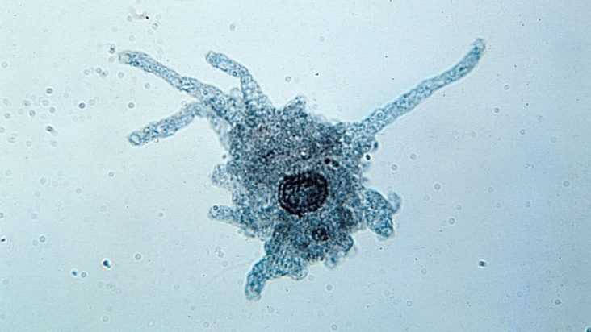
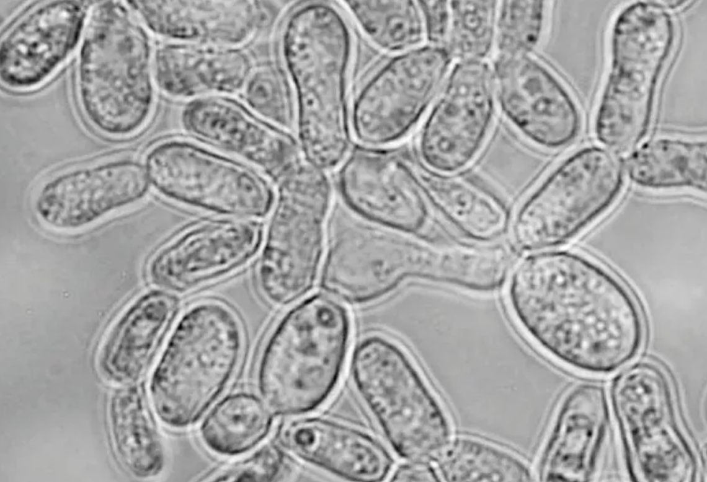

Ch 2 Cellular Organizations
Cells & Organelles
Michael Y's Summer Biology Course
Space / → next · B sidebar
Cell theory 細胞學說
- Cells are the smallest functioning units of life
- A cell can perform all seven characteristics of life
- All organisms consist of one or more cells
- Unicellular organisms 單細胞 & multicellular organisms 多細胞
- Cells arise from pre-existing cells — e.g. cell division
Robert Hooke 羅拔·虎克
Robert Hooke 羅拔·虎克 — pioneer of microscopy.
Cork cells · “cells” 牢房
Cells = “small rooms” 牢房
Soft cork tissue 軟木組織: actually dead cells! — not living cells.
Microscope · labelled diagram 顯微鏡
Use coarse knob first, then fine knob for sharp focus.
Microscope parts & functions 部件與功能
| Part | Function |
|---|---|
| Eyepieces 目鏡 | Magnifies 放大 the image |
| Nosepiece 旋轉鏡筒 | Holds and rotates objective lenses |
| Objective lenses 物鏡 | Magnifies the image — longer = higher magnification |
| Stage clips 載物夾 & stage 載物台 | Holds the slide 載玻片 |
| Coarse adjustment knob 粗調旋鈕 | Moves stage for basic focus |
| Fine adjustment knob 微調旋鈕 | Fine-tunes 微調 for sharp focus |
| Condenser 聚光器 | Focuses light on specimen 標本 |
| Diaphragm lever 光圈控制桿 | Adjusts light amount |
| Light source 光源 | Provides light |
Inverted image 倒像
Inverted image 倒像 under light microscopes.
Recalling · cells

Carbohydrates 碳水化合物
Recalling carbohydrates, lipids and proteins related to cells
| Names | Functions |
|---|---|
| Monosaccharides 單醣 Glucose 葡萄糖 | Main respiratory 呼吸作用 fuel for quick energy |
| Polysaccharides 多醣 Starch 澱粉 | Energy storage in plants |
| Polysaccharides 多醣 Cellulose 纖維素 | Structural component in plant cell wall 細胞壁 |
Lipids 脂質
| Names | Functions |
|---|---|
| Phospholipids 磷脂質 Phosphate 磷+ Glycerol 甘油+ 2 fatty acids 脂肪酸 | Main component of cell membranes 細胞膜 |
| Steroids 類固醇 e.g. Cholesterol 膽固醇 | Sex hormones 性荷爾蒙 Help to stabilize 穩定 cell membranes |
Protein 蛋白質
| Names | Functions |
|---|---|
| Protein 蛋白質 Amino acids 胺基酸 |
|
Cell membrane 細胞膜
The cell membrane mainly consists of:
- Phospholipid bilayer 雙層
- Embedded 嵌入 proteins
Animal vs plant cell structures 動物 vs 植物
Cell wall & chloroplast in plants · large central vacuole in plants.
Prokaryotic cells 原核細胞
Prokaryotes 原核生物 — e.g. E. coli 大腸桿菌, cyanobacteria 藍菌, Taq bacteria.
From prokaryotes to eukaryotes 原核→真核
Organelles 細胞器 — membrane-bound structures with specific functions in eukaryotic 真核 cells.
Table: ✓ / ✗ for Animal 動物 vs Plant 植物.
Drawing space 落筆區
Sketch prokaryotic vs eukaryotic cell · 畫出原核與真核細胞
Prokaryote → eukaryote · animation 原核變真核
Interactive · 互動 — 7-step animation: how prokaryotes became eukaryotic organelles (mitochondria, chloroplast).
Organelles · Part 1
Organelle table · ✓ / ✗ = Animal / Plant
| Organelle 細胞器 |
Animal 動物 |
Plant 植物 |
Membrane 膜 |
Details |
|---|---|---|---|---|
| Cell membrane 細胞膜 | ✓ | ✓ | Single | Made of phospholipid bilayer & proteins Differentially permeable 差異滲透性 Controls substances movement in and out |
| Cell wall 細胞壁 | ✗ | ✓ | N/A | Made of cellulose 纖維素 (carbohydrate) Fully permeable Structural support and protection |
| Cytoplasm 細胞質 | ✓ | ✓ | N/A | Jelly-like 果凍狀 Water & dissolved substances (e.g. protein) Site for reactions |
| Vacuole 液泡 | ✓ | ✓ | Single | Large central in plant cells Filled with water + dissolved substances (e.g. minerals) |
Organelles · Part 2
| Organelle 細胞器 |
Animal 動物 |
Plant 植物 |
Membrane 膜 |
Details |
|---|---|---|---|---|
| Nucleus 細胞核 | ✓ | ✓ | Double nuclear membrane | Contain DNA (genetic material) Control activities of cell (protein synthesis 合成) Nucleolus 核仁: make ribosomes |
| Ribosomes 核糖體 | ✓ | ✓ | N/A | For protein synthesis |
| Rough ER 粗面內質網 | ✓ | ✓ | Single | Protein synthesis and transport |
| Smooth ER 滑面內質網 | ✓ | ✓ | Single | Lipid synthesis and transport |
Organelles · Part 3
| Organelle 細胞器 |
Animal 動物 |
Plant 植物 |
Membrane 膜 |
Details |
|---|---|---|---|---|
| Mitochondria 粒線體 | ✓ | ✓ | Double | Aerobic respiration 需氧呼吸 (needs oxygen) for energy |
| Chloroplast 葉綠體 | ✗ | ✓ | Double | Photosynthesis for food (glucose); store starch granules Chlorophyll 葉綠素 (green pigment) absorbs light Green = have chloroplast; non-green = no (e.g. onion) |
Cell examples 細胞例子

E.coli 大腸桿菌 · Amoeba 變形蟲
Plant cells · chloroplasts 植物細胞
Green parts of plants contain chloroplasts.
Onion & fungi 洋蔥與真菌

Onion 洋蔥 · Fungi 真菌
Prokaryotes vs eukaryotes · Part 1 原核 vs 真核
| Feature | Prokaryotes 原核 | Eukaryotes 真核 | |
|---|---|---|---|
| Animal Cells | Plant Cells | ||
| Examples | Bacteria | Mushroom, human | Grass |
| No. of cells | Unicellular 單細胞 only | Unicellular or multicellular 多細胞 | |
| Size | Very small | smaller | larger |
| Shape | simpler | Irregular | Regular (cell wall) |
| Nucleus 細胞核 | No true nucleus DNA lying free in cytoplasm | With true nucleus 真核 DNA bounded by nuclear membrane | |
Prokaryotes vs eukaryotes · Part 2 原核 vs 真核
| Feature | Prokaryotes 原核 | Eukaryotes 真核 | |
|---|---|---|---|
| Animal Cells | Plant Cells | ||
| Membrane-bound organelles 膜性胞器 | ✗ | ✓ (e.g. ER, vacuole, mitochondria, chloroplast) | |
| Ribosomes 核糖體 | ✓ Free in cytoplasm | ✓ Some free, some bound to rough ER | |
| Cell wall | Some | Always absent (except fungi 真菌) | Always present |
| Chloroplasts 葉綠體 | ✗ | ✗ | ✓ (green parts) |
Draw together · Animal & plant cells 動植物細胞
Animal cell 動物細胞
Plant cell 植物細胞
Draw together — label cell membrane, nucleus, cytoplasm · plant: cell wall, vacuole, chloroplast
Chloroplast · microscopy 葉綠體
Under electron microscopy, internal grana structure is visible.
Viruses are NOT cells 病毒不是細胞
Viruses are not cells! 病毒不是細胞!
Cannot carry out life processes independently.
Concept check · Identify cells
Identify the above cells:
Prokaryotes: _________________
Eukaryotes: _________________
Expected: D (bacteria) · A, B, C (eukaryotes)
Concept checks · Cellular organizations
Cellular organizations
細胞組成
Each question: show Q → click Answer → click Explanation
Cellular organizations · MCQ 1
Which of the following is the smallest functional unit of life?
- A. Organ
- B. Tissue
- C. Cell
- D. Organelle
Review cell structures and organelle functions.
Cellular organizations · MCQ 2
Which of the following statements is NOT part of the cell theory?
- A. Cells are the smallest functioning units of life.
- B. All organisms consist of one or more cells.
- C. Cells arise from non-living matter.
- D. Cells arise from pre-existing cells.
Review cell structures and organelle functions.
Cellular organizations · MCQ 3
Which organelle is responsible for protein synthesis?
- A. Ribosome
- B. Mitochondria
- C. Chloroplast
- D. Vacuole
Review cell structures and organelle functions.
Cellular organizations · MCQ 4
What is the main component of the cell wall in plants?
- A. Protein
- B. Cellulose
- C. Phospholipids
- D. Starch
Review cell structures and organelle functions.
Cellular organizations · MCQ 5
Which of the following organelles is involved in aerobic respiration?
- A. Nucleus
- B. Ribosome
- C. Mitochondria
- D. Chloroplast
Review cell structures and organelle functions.
Cellular organizations · MCQ 6
Which organelle is absent in animal cells but present in plant cells?
- A. Mitochondria
- B. Ribosome
- C. Chloroplast
- D. Nucleus
Review cell structures and organelle functions.
Cellular organizations · MCQ 7
What is the function of the vacuole in plant cells?
- A. Protein synthesis
- B. Lipid transport
- C. Storage of water and dissolved substances
- D. Energy production
Review cell structures and organelle functions.
Cellular organizations · MCQ 8
Which feature is present in prokaryotic cells but absent in eukaryotic cells?
- A. Membrane-bound organelles
- B. DNA lying free in the cytoplasm
- C. Ribosomes bound to the ER
- D. True nucleus
Review cell structures and organelle functions.
Cellular organizations · MCQ 9
Which of the following is a characteristic of eukaryotic cells?
- A. DNA lying free in the cytoplasm
- B. Absence of membrane-bound organelles
- C. Presence of a nuclear membrane
- D. Simpler cell structure
Review cell structures and organelle functions.
Cellular organizations · MCQ 10
What is the primary function of the smooth ER?
- A. Protein synthesis
- B. Lipid synthesis and transport
- C. DNA replication
- D. Photosynthesis
Review cell structures and organelle functions.
Cellular organizations · MCQ 11
Which of the following is a double-membrane organelle?
- A. Ribosome
- B. Cytoplasm
- C. Mitochondria
- D. Vacuole
Review cell structures and organelle functions.
Cellular organizations · MCQ 12
What is the function of the nucleolus?
- A. Photosynthesis
- B. Protein synthesis
- C. Ribosome production
- D. Lipid transport
Review cell structures and organelle functions.
Cellular organizations · MCQ 13
What is the structural difference between prokaryotic and eukaryotic cells?
- A. Prokaryotic cells have a true nucleus.
- B. Eukaryotic cells lack membrane-bound organelles.
- C. Prokaryotic cells lack a nuclear membrane.
- D. Eukaryotic cells have no ribosomes.
Review cell structures and organelle functions.
Cellular organizations · MCQ 14
Which organelle is jelly-like and serves as the site for reactions?
- A. Nucleus
- B. Cytoplasm
- C. Chloroplast
- D. Rough ER
Review cell structures and organelle functions.
Cellular organizations · MCQ 15
Which of the following is NOT found in prokaryotic cells?
- A. Ribosomes
- B. Cell wall
- C. Chloroplasts
- D. DNA
Review cell structures and organelle functions.
Cellular organizations · MCQ 16
What is the main function of the rough endoplasmic reticulum?
- A. Lipid synthesis
- B. Protein synthesis and transport
- C. DNA replication
- D. Energy production
Review cell structures and organelle functions.
Cellular organizations · MCQ 17
Which of the following is always absent in animal cells?
- A. Mitochondria
- B. Vacuole
- C. Chloroplast
- D. Ribosome
Review cell structures and organelle functions.
Cellular organizations · MCQ 18
What is the main function of the cell membrane?
- A. Energy production
- B. Differentially permeable barrier
- C. Structural support
- D. Photosynthesis
Review cell structures and organelle functions.
Cellular organizations · MCQ 19
Which of the following cells lack a nucleus?
- A. Plant cells
- B. Animal cells
- C. Prokaryotic cells
- D. Fungal cells
Review cell structures and organelle functions.
Cellular organizations · MCQ 20
What is the main component of the cell membrane?
- A. Cellulose
- B. Phospholipid bilayer and proteins
- C. Starch granules
- D. Chlorophyll
Review cell structures and organelle functions.
Cellular organizations · MCQ 21
What is the primary function of ribosomes?
- A. Lipid transport
- B. Protein synthesis
- C. Energy production
- D. DNA replication
Review cell structures and organelle functions.
Cellular organizations · MCQ 22
Which organelle is responsible for storing genetic material?
- A. Ribosome
- B. Nucleus
- C. Vacuole
- D. Cytoplasm
Review cell structures and organelle functions.
Cellular organizations · MCQ 23
What is the function of the mitochondria?
- A. Photosynthesis
- B. Protein synthesis
- C. Aerobic respiration
- D. Lipid transport
Review cell structures and organelle functions.
Cellular organizations · MCQ 24
Which of the following structures is present in both plant and animal cells?
- A. Cell wall
- B. Chloroplast
- C. Mitochondria
- D. Large central vacuole
Review cell structures and organelle functions.
Cellular organizations · MCQ 25
What is the main function of the chloroplast?
- A. Respiration
- B. Photosynthesis
- C. Protein synthesis
- D. Energy storage
Review cell structures and organelle functions.
Cellular organizations · MCQ 26
Which type of cells are simpler in structure?
- A. Prokaryotic
- B. Eukaryotic
- C. Animal cells
- D. Plant cells
Review cell structures and organelle functions.
Cellular organizations · MCQ 27
What is the shape of plant cells?
- A. Irregular due to cell membrane
- B. Regular due to cell wall
- C. Circular due to cell wall
- D. Oval due to cell membrane
Review cell structures and organelle functions.
Cellular organizations · MCQ 28
Which of the following organelles is single-membraned?
- A. Nucleus
- B. Ribosome
- C. Vacuole
- D. Rough ER
Review cell structures and organelle functions.
Cellular organizations · MCQ 29
Which organelle is made of cellulose?
- A. Cell membrane
- B. Cell wall
- C. Nucleus
- D. Ribosome
Review cell structures and organelle functions.
Cellular organizations · MCQ 30
What is the role of the nuclear membrane?
- A. Protects the nucleus
- B. Synthesizes proteins
- C. Stores water
- D. Produces ribosomes
Review cell structures and organelle functions.
Cellular organizations · T/F 1–5
True / False Set 1 — ✔ if correct · ✘ on wrong words
1. Cells are the smallest functioning units of life.
Correct statement.
2. All organisms consist of one or more cells.
Correct statement.
3. Prokaryotes have membrane-bound organelles.
wrongPhrase: have membrane-bound organelles. Correct: Prokaryotes lack membrane-bound organelles.
4. Eukaryotic cells have a true nucleus.
Correct statement.
5. The cell wall is made of phospholipid bilayer.
wrongPhrase: phospholipid bilayer. Correct: The cell wall is made of cellulose.
Cellular organizations · T/F 6–10
True / False Set 2 — ✔ if correct · ✘ on wrong words
6. Ribosomes are responsible for protein synthesis.
Correct statement.
7. Vacuoles are larger and central in plant cells.
Correct statement.
8. The mitochondria are involved in aerobic respiration.
Correct statement.
9. Chloroplasts are present in animal cells.
wrongPhrase: present in animal cells. Correct: Chloroplasts are absent in animal cells.
10. Cytoplasm is the site for cellular reactions.
Correct statement.
Cellular organizations · T/F 11–15
True / False Set 3 — ✔ if correct · ✘ on wrong words
11. The nucleus controls the activities of the cell.
Correct statement.
12. The nucleolus makes ribosomes.
Correct statement.
13. DNA in prokaryotic cells is not enclosed by a nuclear membrane.
Correct statement.
14. The rough ER is responsible for lipid synthesis.
wrongPhrase: lipid synthesis. Correct: The rough ER is responsible for protein synthesis.
15. The cell membrane is fully permeable.
wrongPhrase: fully permeable. Correct: The cell membrane is differentially permeable.
Cellular organizations · T/F 16–20
True / False Set 4 — ✔ if correct · ✘ on wrong words
16. The smooth ER is involved in lipid synthesis and transport.
Correct statement.
17. Ribosomes are absent in prokaryotic cells.
wrongPhrase: absent in prokaryotic cells. Correct: Ribosomes are present in prokaryotic cells.
18. Plant cells have a regular shape due to the cell wall.
Correct statement.
19. Mitochondria have a double membrane.
Correct statement.
20. Prokaryotic cells are larger than eukaryotic cells.
wrongPhrase: larger than eukaryotic cells. Correct: Prokaryotic cells are smaller than eukaryotic cells.
Cellular organizations · Fill 1–5
Fill in the blanks Set 1 — word bank below (words may be reused)
1. Prokaryotic________ cells lack a true nucleus.
2. Eukaryotic________ cells have a nuclear membrane.
3. The Nucleus________ controls all cell activities.
4. The Ribosome________ is the site for protein synthesis.
5. The Mitochondria________ is responsible for aerobic respiration.
Cellular organizations · Fill 6–10
Fill in the blanks Set 2 — word bank below (words may be reused)
6. The Vacuole________ stores water and dissolved substances in plant cells.
7. The Cell wall________ is made of cellulose in plant cells.
8. Eukaryotic________ cells, like human cells, have membrane-bound organelles.
9. The Cytoplasm________ is jelly-like and is the site of reactions.
10. The DNA________ contains genetic material in eukaryotic cells.
Cellular organizations · Fill 11–15
Fill in the blanks Set 3 — word bank below (words may be reused)
11. Membrane-bound organelles________ organelles like the rough ER are absent in prokaryotic cells.
12. The Chloroplast________ is responsible for photosynthesis in plant cells.
13. Cellulose________ is the main component of the plant cell wall.
14. Aerobic respiration________ is the process that requires oxygen for energy production.
15. Prokaryotic________ cells are simpler in structure compared to eukaryotic cells
完 · End
Ch 2 Cellular Organizations
Michael Y's Summer Biology Course
Review with S3 Bio flashcards & quiz